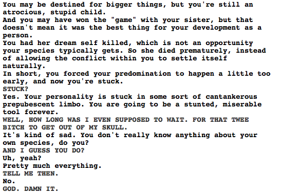

I second that god damn it. I want to know everything about his species! NOW!
However, knowing that cherubim eventually have one of their personalities/souls/whatever take over the body completely is interesting. I guess that’s one way to make them grow as people–whatever Caliborn would have had to do to become the dominant one and whatever he would have gained from that is now off the table.